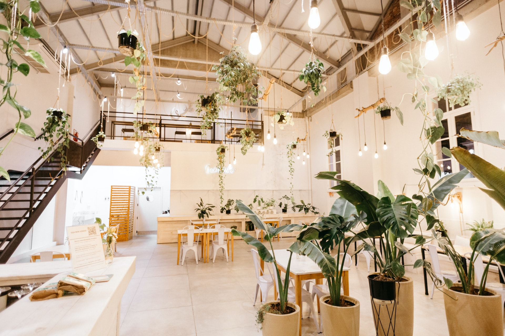

Welcome!
Thank you for taking a look at our website.
In a beautiful monumental building in the middle of the bustling center of the city you can find Serenity Café.
You can enjoy this cozy and relaxing spot where you can grab a cup of coffee, catch up with friends, or work on your latest project.
We serve the most delicious coffees and teas, homemade cakes, lazy breakfasts and extensive lunches.
Our café is designed to provide a peaceful and calming atmosphere, with comfortable, accessible seating and a warm ambiance.
Our friendly staff is always open for a chat.
Come visit us and discover your own moment of serenity.
